Admin Panel Reference
The Logystera admin panel is available at Logystera in your WordPress admin sidebar. It has eight tabs, all visible immediately after activation — no account required.
When the plugin is not connected to Logystera, a banner at the top shows: Not connected — Events are being collected locally. with a Connect button. All tabs remain fully functional for local event browsing and configuration.
Upgrade Required Notice
If your plugin version is below the minimum version required by the gateway, a red admin notice appears:
Logystera: Your plugin version is no longer supported by the gateway. Please update to version X.X.X.X or later. Log ingestion is paused until the plugin is updated.
This notice appears on the Dashboard and Logystera settings pages. Log ingestion is automatically paused — events continue to be collected locally but are not sent to the gateway until the plugin is updated. The notice clears automatically after a successful ingest with an updated plugin.
Status
The default tab. Shows the current health of the plugin at a glance.
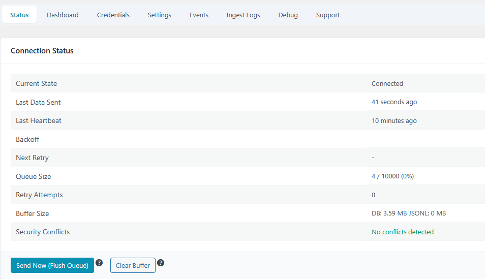
| Field | Description |
|---|---|
| Current State | Plugin state: active, backoff, frozen, unconfigured |
| Last Data Sent | How long ago the last successful flush to the gateway was |
| Last Heartbeat | How long ago the last heartbeat was sent (runs every 15 min) |
| Backoff | Current backoff level if the gateway is unreachable |
| Next Retry | Time remaining before the next retry attempt |
| Queue Size | Events buffered / max capacity (fill %) |
| Dropped Events | Events discarded because the buffer was full |
| Retry Attempts | Number of consecutive failed delivery attempts |
| Buffer Size | JSONL buffer disk usage |
| Security Conflicts | Detected conflicts with other security plugins |
Actions:
- Send Now (Flush Queue) — immediately delivers all buffered events without waiting for the next cron run (disabled when not connected)
- Clear Buffer — permanently deletes all buffered events without sending them
Logystera Entity Stats
When connected and after at least one successful ingest, an Entity Stats card appears showing data returned by the gateway:
| Field | Description |
|---|---|
| Total Events Processed | Total number of events processed by Logystera for this entity (all time) |
| Last Batch Size | Number of events in the most recently ingested batch |
| Last Seen by Gateway | How long ago the gateway last received data from this site |
| Stats Updated | How long ago the stats were refreshed (updated on each successful ingest) |
!!! note Stats are refreshed automatically on every successful ingest. If the card is not visible, no successful ingest has occurred yet.
Data Transparency
Below the connection status, a Data Transparency card shows:
| Field | Description |
|---|---|
| What is sent | Login events, admin actions, REST API metadata, environment snapshots, error summaries |
| What is NOT sent | Post/page content, passwords, emails, database contents, file contents |
| Destination | The configured gateway URL (HTTPS) |
| Frequency | Events batched every 5 minutes (configurable). Heartbeat every 15 minutes. |
| How to disable | Toggle Collect or Ingest off in Settings, or Disconnect from Credentials tab. |
Dashboard
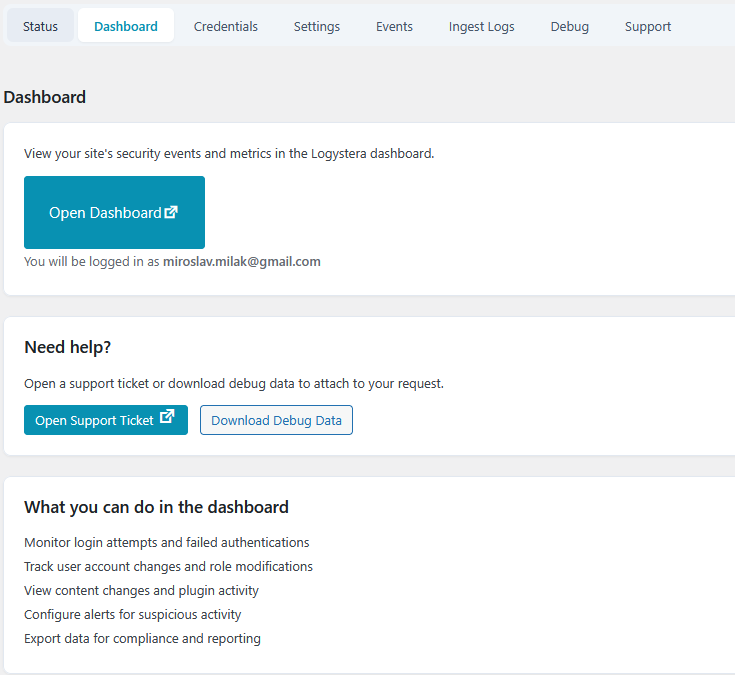
When connected, opens a direct link to your entity's dashboard on app.logystera.com. The button generates a magic-link login so you land directly in your account without a separate login step.
When not connected, shows a prompt to connect first.
Credentials
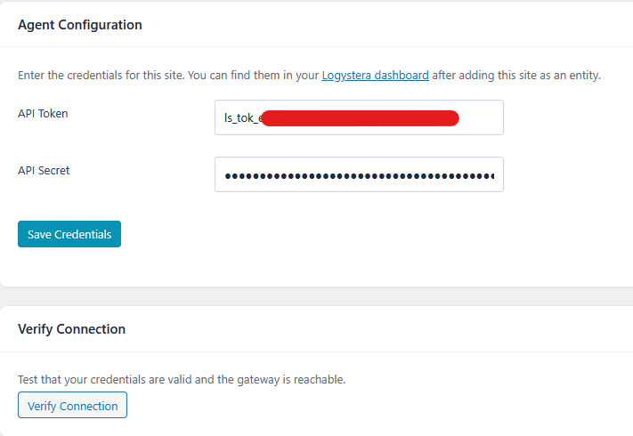
Manage the connection to the Logystera gateway.
When not connected, a Connect to Logystera button is shown at the top for auto-connect via OAuth. You can also enter credentials manually in the form below.
| Field | Description |
|---|---|
| API Token | Your entity's public token (from the Logystera dashboard) |
| API Secret | Your entity's HMAC signing secret. Never expose publicly |
After saving, use Verify Connection to confirm the credentials are accepted by the gateway.
The gateway URL (https://ingest.logystera.com) is fixed and not configurable from the admin panel. To override it, set the LOGYSTERA_GATEWAY_DEFAULT constant in wp-config.php.
Rotate Credentials
Click Rotate Credentials to generate new credentials via the Logystera app. You are redirected to Logystera, where new credentials are issued and delivered back to the plugin automatically. Old credentials stop working immediately.
Disconnect
Click Disconnect this site to clear stored credentials and stop sending data. Your data on the Logystera dashboard is not deleted. To reconnect, use the Connect button in the banner or the Credentials tab.
!!! note Verify Connection, Rotate Credentials, and Disconnect are only visible when credentials are stored.
Settings
Controls delivery behaviour, event hooks, privacy, and local history.
See Configuration for the full reference of every setting.
Event Capture & Delivery
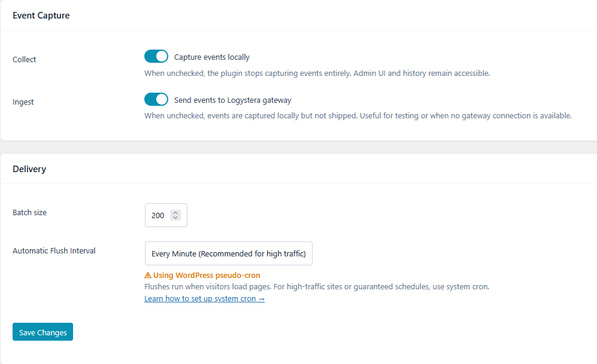
- Collect — enable/disable local event capture entirely
- Ingest — enable/disable shipping to the gateway (events stay local when off)
- Batch size — number of events per gateway call (default 200, max 500)
- Automatic Flush Interval — how often buffered events are delivered
Events / History
- Enable Local Event History — stores shipped events in MySQL for browsing in the Events tab
- Event cap — maximum events stored locally (gateway-managed, read-only)
- Retention (days) — how long to keep history (gateway-managed, read-only)
Event Hooks
Control which WordPress events are captured. Hooks marked with a red dot are recommended for security monitoring and should stay enabled.
Identity & Access
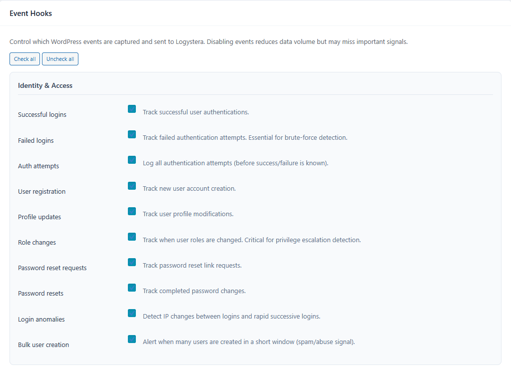
Content Integrity, Comments, File Uploads
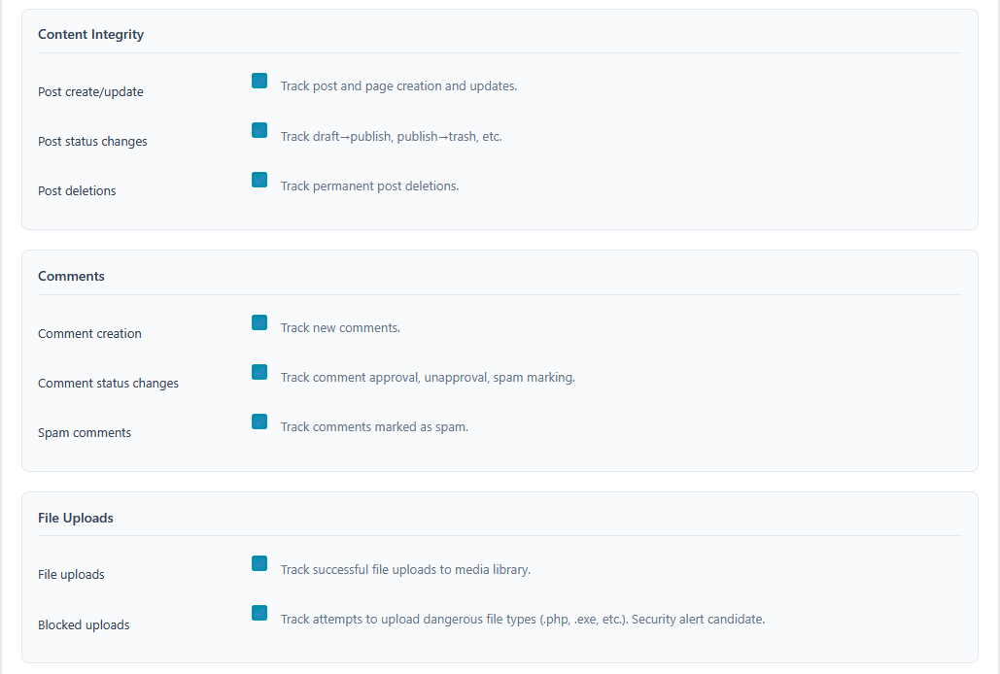
Configuration & Supply Chain, API & Network
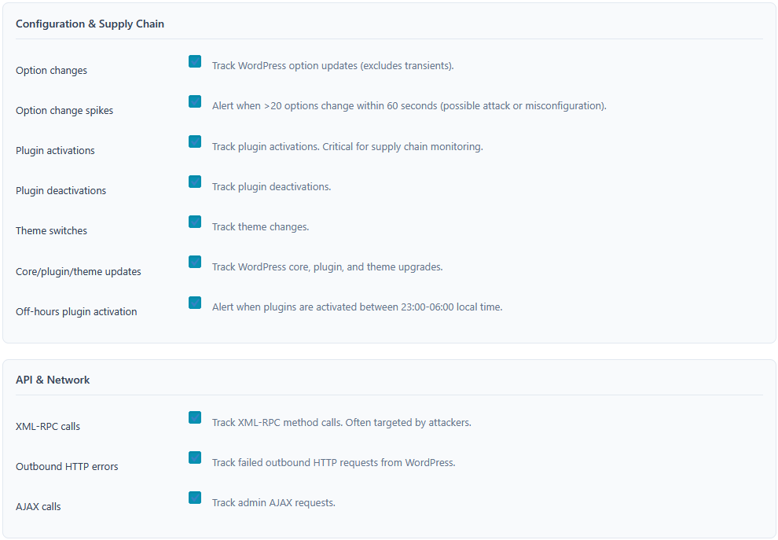
Health & Errors, Performance (Advanced)
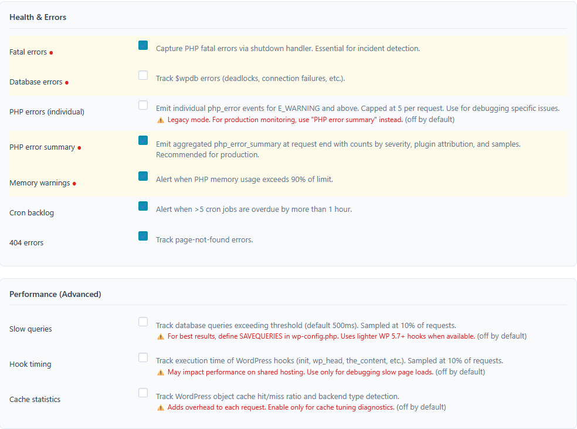
Privacy
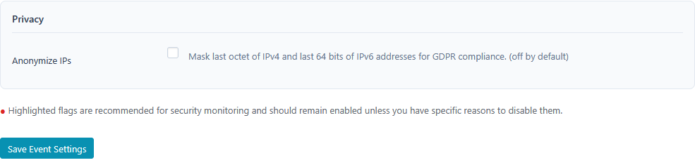
- Anonymize IPs — masks the last octet of IPv4 and last 64 bits of IPv6 addresses before events leave the server
Events
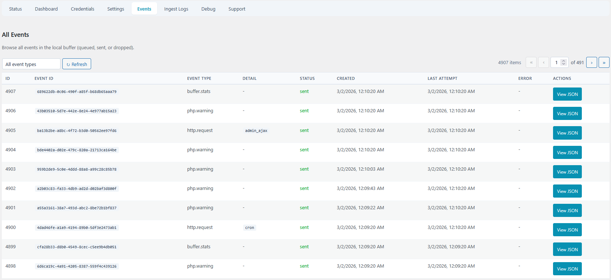
Browse all events currently in the local buffer — queued, sent, or dropped.
Columns: ID, Event Type, Status (colour-coded), Created, Last Attempt, Error.
Each row has a View JSON button that opens the full event body. This is the primary tool for verifying that the right data is being captured before it reaches the gateway.
Reading event JSON
{
"event_type": "auth.login.failed",
"event_id": "01JMQT8X...",
"status": "pending",
"body": {
"timestamp": "2026-03-01T10:23:44Z",
"site_url": "https://example.com",
"labels": {
"site.url": "https://example.com",
"site.blog": "1"
},
"payload": {
"username_hash": "a3f1c...",
"ip": "203.0.113.0",
"user_agent": "Mozilla/5.0 ...",
"success": false
}
}
}
Key fields:
event_type— the signal name (e.g.auth.login.failed,file.upload.blocked)status—pending(buffered),sent,error, ordroppedbody.labels— infrastructure metadata attached to every eventbody.payload— the event-specific data (varies per signal type)body.payload.username_hash— usernames are always HMAC-SHA256 hashed before storagebody.payload.ip— truncated to/24if IP anonymisation is enabled
Enabling local history
Events are visible in this tab only when Enable local history is turned on in the Settings tab. Without it, the tab shows the JSONL buffer (last 50 events before the next flush).
To enable: Settings → Local History → Enable local history → Save.
Ingest Logs
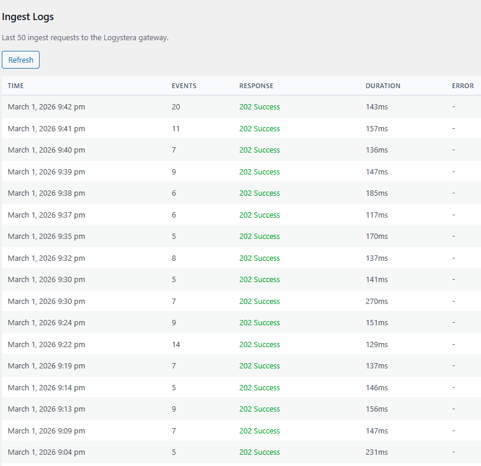
Shows the last 50 HTTP requests made to the gateway, including status code, response time, and any error message. Use this to diagnose delivery failures.
Hit Refresh to reload the table without leaving the page.
Debug
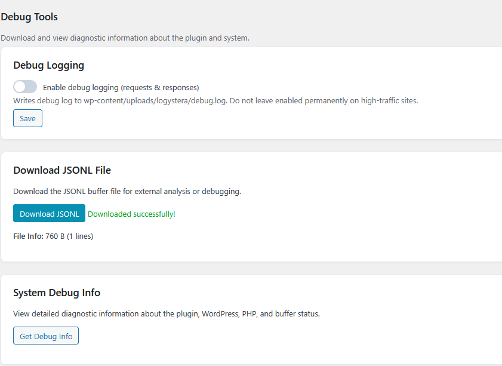
Tools for diagnosing issues.
| Tool | Description |
|---|---|
| Debug logging | Writes HTTP request/response details to wp-content/uploads/logystera/debug.log. Disable after debugging — avoid on high-traffic sites. |
| Download JSONL | Downloads the raw JSONL buffer file. Useful for offline analysis. |
| System Debug Info | Dumps plugin version, PHP version, WordPress version, buffer stats, and recent errors as formatted text. |
Support
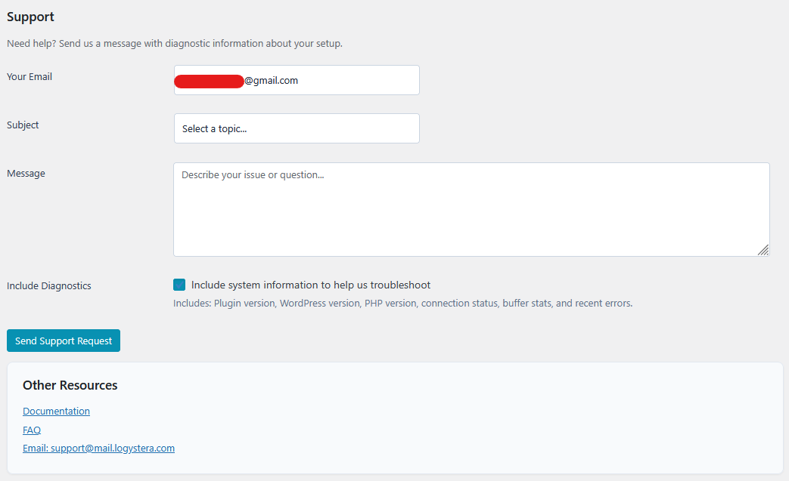
Send a support request directly from the admin panel. Optionally attaches system diagnostics (plugin version, WP version, PHP version, connection status, buffer stats, recent errors) to help with troubleshooting.